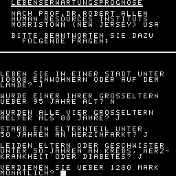

LEBENSERWARTUNGSPROGNOSE
________________________
NACH PROF.DR.ROBERT ALLEN
HUMAN RESOURCES INSTITUTS
MORRISTOWN (NEW JERSEY) USA
BITTE BEANTWORTEN SIE DAZU
FOLGENDE FRAGEN: ...
125 WINDOW:CLS:GOTO 1000
129 REM WIE BITTE ? -----------------UP
130 PRINT INK 2;AT(20,27);"WIE BITTE ?":RETURN
199 REM EINGABE(J/N) ----------------UP
200 A$="J":INPUT A$
202 IF A$="J"OR A$="N"THEN PRINT:RETURN
204 INPUT "BITTE MIT J/N ANTWORTEN";A$:GOTO 202
209 REM EINGABE(JAHRE) --------------UP
210 PRINT "FUER DIESE FRAGE BITTE ALTER ANGEBEN"
212 PRINT " JAHRE";STRING$(10,CHR$(8));:INPUT "";I:PRINT
214 IF I>14 AND I<100 THEN 218
216 PRINT "BITTE DAS ALTER KORREKT ANGEBEN!":GOTO 212
218 IF I<25 THEN RETURN
220 Z=Z-INT((I-25)/10+1):RETURN
1000 WINDOW:CLS:WINDOW 0,10,2,31
1002 PRINT "LEBENSERWARTUNGSPROGNOSE":PRINT STRING$(24,"î")
1004 PRINT "NACH PROF.DR.ROBERT ALLEN":PRINT "HUMAN RESOURCES INSTITUTS"
1006 PRINT "MORRISTOWN (NEW JERSEY) USA":PRINT
1008 PRINT "BITTE BEANTWORTEN SIE DAZU FOLGENDE FRAGEN:"
1009 WINDOW 9,12,0,31:PRINT STRING$(32," ")
1010 WINDOW 11,31,0,31:Z=71
1018 PRINT "LEBEN SIE IN EINER GROSSSTADT";:GOSUB 200
1019 IF A$="J"THEN Z=Z-2:GOTO 1024
1020 PRINT "LEBEN SIE IN EINER STADT UNTER"
1022 PRINT "10000 EINWOHNERN ODER AUF DEM LANDE";:GOSUB 200:IF A$="J"THEN Z=Z+2
1024 PRINT "WURDE EINER IHRER GROSSELTERN ":PRINT "UEBER 95 JAHRE ALT";
1026 GOSUB 200:IF A$="J"THEN Z=Z+2
1028 PRINT "WURDEN ALLE VIER GROSSELTERN AELTER ALS 80 JAHRE";:GOSUB 200
1030 IF A$="J"THEN Z=Z+6
1032 PRINT "STARB EIN ELTERNTEIL UNTER 50 JAHREN AN HERZINFARKT";
1034 GOSUB 200:IF A$="J"THEN Z=Z-4
1036 PRINT "LEIDEN ELTERN ODER GESCHWISTER UNTER 50 JAHREN AN KREBS, HERZ-"
1038 PRINT "KRANKHEIT ODER DIABETES";:GOSUB 200:IF A$="J"THEN Z=Z-3
1040 PRINT "VERDIENEN SIE UEBER 1200 MARK MONATLICH";:GOSUB 200
1042 IF A$="J"THEN Z=Z-2
1044 PRINT "HABEN SIE ABITUR";:GOSUB 200:IF A$="J"THEN Z=Z+1
1046 PRINT "HABEN SIE STUDIERT ODER SIND SIE MEISTER";:GOSUB 200
1048 IF A$="J"THEN Z=Z+2
1050 PRINT "SIND SIE RENTNER UND ARBEITEN SIE NOCH";:GOSUB 200
1052 IF A$="J"THEN Z=Z+3
1054 I=0:PRINT "SIND SIE VERHEIRATET ODER LEBEN SIE MIT EINEM MENSCHEN ";
1056 PRINT "ZUSAMMEN";:GOSUB 200:IF A$="N"THEN GOSUB 210:ELSE Z=Z+5
1058 PRINT "ARBEITEN SIE IM BUERO";:GOSUB 200:IF A$="J"THEN Z=Z-3:GOTO 1062
1060 PRINT "ARBEITEN SIE KOERPERLICH";:GOSUB 200:IF A$="J"THEN Z=Z+3
1062 PRINT "TREIBEN SIE AKTIV SPORT";:GOSUB 200:IF A$="J"THEN Z=Z+4:GOTO 1068
1064 PRINT "BETAETIGEN SIE SICH ZWEIMAL PRO WOCHE SPORTLICH";:GOSUB 200
1066 IF A$="J"THEN Z=Z+2
1068 PRINT "SCHLAFEN SIE MEHR ALS 10 STUNDEN TAEGLICH";:GOSUB 200
1070 IF A$="J"THEN Z=Z-4
1072 PRINT "WERDEN SIE LEICHT WUETEND";:GOSUB 200:IF A$="J"THEN Z=Z-3
1074 PRINT "NEHMEN SIE DAS LEBEN LEICHT";:GOSUB 200:IF A$="J"THEN Z=Z+3
1076 PRINT "SIND SIE GLUECKLICH";:GOSUB 200:IF A$="J"THEN Z=Z+1:GOTO 1080
1078 PRINT "SIND SIE UNGLUECKLICH";:GOSUB 200:IF A$="J"THEN Z=Z-2
1080 PRINT "SIND SIE LETZTES JAHR BEIM SCHNELLFAHREN ERWISCHT WORDEN";
1082 GOSUB 200:IF A$="J"THEN Z=Z-1
1084 PRINT "SIND SIE KETTENRAUCHER";:GOSUB 200:IF A$="J"THEN Z=Z-8:GOTO 1092
1086 PRINT "RAUCHEN SIE TAEGLICH EINE PACKUNG ZIGARETTEN";:GOSUB 200
1088 IF A$="J"THEN Z=Z-6:GOTO 1092
1090 PRINT "RAUCHEN SIE AM TAG 10 ZIGARETTEN";:GOSUB 200:IF A$="J"THEN Z=Z-3
1092 PRINT "TRINKEN SIE MEHR ALS ZWEI SCHNAEPSE ODER BIERE AM TAG";
1094 GOSUB 200:IF A$="J"THEN Z=Z-1
1096 PRINT "HABEN SIE EIN UEBERGEWICHT VON 20 KILO";:GOSUB 200
1098 IF A$="J"THEN Z=Z-8:GOTO 1104
1100 PRINT "ODER SIND ES 15 KILO";:GOSUB 200:IF A$="J"THEN Z=Z-4:GOTO 1104
1102 PRINT "ABER DOCH BESTIMMT 5 KILO";:GOSUB 200:IF A$="J"THEN Z=Z-2
1104 PRINT "LASSEN SIE SICH EINMAL IM JAHR VOM ARZT UNTERSUCHEN";
1106 GOSUB 200:IF A$="J"THEN Z=Z+2
1108 IF I<>0 THEN 1120
1110 PRINT "SIND SIE 30 BIS 40 JAHRE ALT";:GOSUB 200:IF A$="J"THEN I=35:GOTO 1120
1112 PRINT "SIND SIE 40 BIS 50 JAHRE ALT";:GOSUB 200:IF A$="J"THEN I=45:GOTO 1122
1114 PRINT "SIND SIE 50 BIS 70 JAHRE ALT";:GOSUB 200:IF A$="J"THEN I=55:GOTO 1124
1116 PRINT "SIND SIE AELTER ALS 70 JAHRE";:GOSUB 200:IF A$="J"THEN I=75:GOTO 1126
1118 GOTO 1128
1120 IF I>=30 AND I<40 THEN Z=Z+2
1122 IF I>=40 AND I<50 THEN Z=Z+3
1124 IF I>=50 AND I<70 THEN Z=Z+4
1126 IF I>=70 THEN Z=Z+5
1128 WINDOW 6,31,0,31:CLS
1130 PRINT "DIE AUSWERTUNG DER FRAGEN ERGIBTEINE LEBENSERWARTUNG VON"
1132 PRINT " ";Z;:PRINT "JAHREN.":PRINT
1134 PRINT:PRINT "ANMERKUNG:":PRINT "DIE ANGABEN ERGEBEN SICH AUS"
1136 PRINT "DEN VON IHNEN BEANTWORTETEN"
1138 PRINT "FRAGEN. INDIVIDUELLE KRITERIEN KONNTEN NICHT";
1140 PRINT " BERUECKSICHTIGT WERDEN."
1142 PRINT "ABWEICHUNGEN VOM TESTERGEBNIS SIND DAHER NICHT AUSGESCHLOSSEN."
1144 PRINT:PRINT TAB(14);"NOCH EINMAL";:GOSUB 200:IF A$="J"THEN 1000
1146 WINDOW:CLS:PRINT AT(12,8);"AUF WIEDERSEHEN!":PAUSE 50:CLS:END